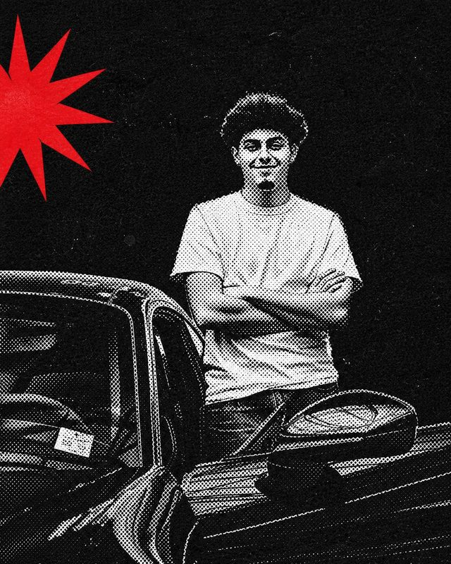

Tom Carvalho — vidéaste indépendant, Paris.

Ma matière première, c'est la lumière. Mon outil, c'est la caméra. Mon objectif, c'est de raconter. Depuis 4 ans, je façonne des histoires à travers l'image. Ce qui a commencé par filmer mes proches est devenu une passion, puis un métier.
Des projets variés, de l'automobile aux réseaux sociaux, en passant par l'événementiel et la communication d'entreprise. J'écris, je filme, je monte et je publie.
entre deux plans
Une envie, un projet, une idée floue à 3h du matin — envoie, on en fait quelque chose. Basé à Paris, disponible partout en France.